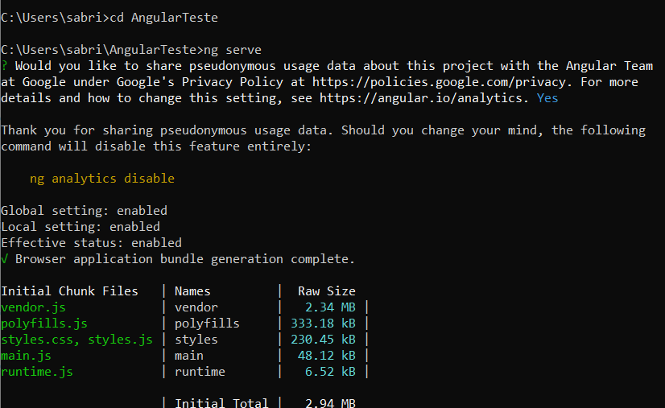
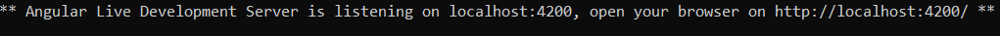
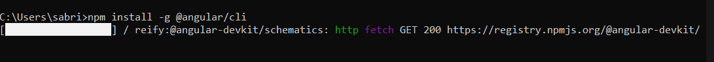
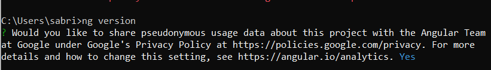
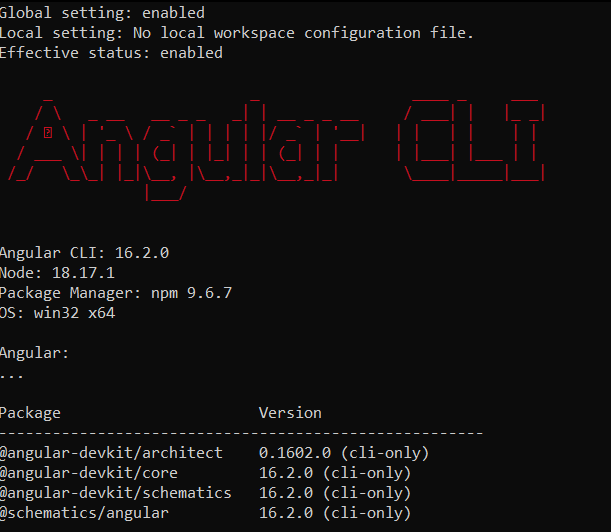
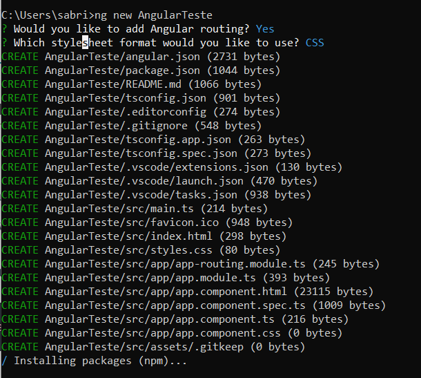
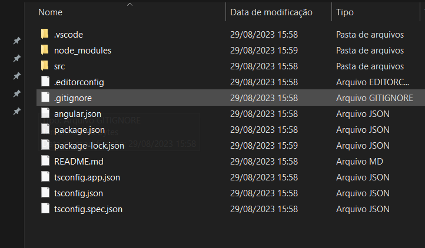
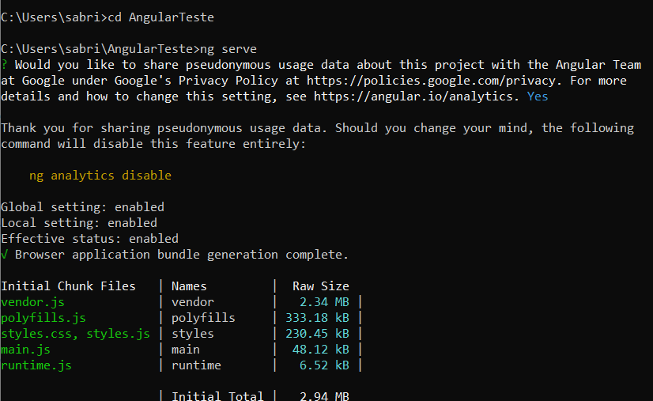
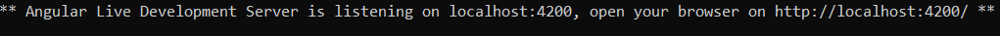

Sumario
O Angular é um framework JavaScript que simplifica não apenas a construção da interface de usuário, mas também o desenvolvimento de aplicações client-side diferenciadas, sejam elas para a web, mobile ou desktop. Sua finalidade é nos dar ferramentas necessárias para criação de aplicações SPA, além disso também deixa o desenvolvimento deste tipo de aplicação mais simples e otimizado. Com ele, podemos desenvolver aplicações web voltadas tanto para resoluções desktop quanto para resoluções mobile, tornando-as dinâmicas, modernas e escaláveis.
Com o Angular, temos um novo paradigma de desenvolvimento focado nos dados da aplicação. Ele não utiliza uma virtualização do DOM para manipulá-lo: ele utiliza mecanismos próprios de detecção de alterações na interface, alterações tas disparadas principalmente por uma estrutura chamada Two-Way Data Binding. O Two-Way Data Binding mantém o model e a view sempre atualizados entre si, ou seja: sempre que algum model é atualizado, essa alteração se reflete automaticamente na view.
Suas principais características são:
• Suporte cross-platform: esse framework fornece suporte a múltiplas plataformas de desenvolvimento. O Angular pode ser utilizado para criar aplicações web SPA, aplicações mobile (com o suporte do Ionic, por exemplo) ou até mesmo aplicações desktop (com o suporte do Electron).
Mesmo em ambientes distintos, a API do Angular permanece praticamente a mesma, o que facilita a curvatura de adoção e aprendizagem em múltiplos ambientes de desenvolvimento;
• Integração e suporte à todas as fases de desenvolvimento: provê ferramental e suporte para todas as fases de desenvolvimento, desde a escrita do código em si (apoiando-se bastante na API e no sistema de tipos do TypeScript) até a criação de fluxos de teste (com o apoio principalmente do Karma – uma biblioteca para escrita de testes JavaScript), passando pelo suporte excelente à criação de animações, o provisionamento de estruturas de acessibilidade e até mesmo o scaffolding de projetos através do Angular CLI;
• Produtividade aliada à performance: consegue oferecer suporte ao desenvolvimento rápido de aplicações através de uma API simples, bem estruturada e bem documentada, o que acaba trazendo bastante produtividade.
Por fim, por mais que o Angular não utilize o conceito de Virtual DOM (conceito utilizado por outros frameworks, como o React), ainda sim o Angular oferece uma performance bem interessante, principalmente com a Ivy, a engine de renderização utilizada desde o Angular 6+.
O Angular 2.0 foi anunciado no ng-Europe conference 22-23 de setembro de 2014.[3] As mudanças drásticas na versão 2.0 criou uma considerável controvérsia entre os desenvolvedores.[4] Em 30 de abril de 2015, os desenvolvedores Angular anunciaram que o Angular 2 foi transformado de Alfa a Developer Preview.[5] O Angular 2 mudou-se para o Beta em dezembro de 2015,[6] e a primeira versão foi publicada em Maio de 2016.[7] A versão final foi lançada em 14 de setembro de 2016.
Para realizar a instalação do Angular é necessario instalar primeiro o node.Js
Primeiro entre no site do Node.Js,depois de realizar a instalação do node
abra o prompt de comando pois e vamos digitar o comando npm para instalar o Angular como na imagem a seguir:

feito isso para abrir o Angular digite o comando ng version
tambem no prompt de comando:


Para criar o seu primeiro projeto em Angular abra o prompt de comando e digite o comando ng new, escolha um nome para seu projeto, pode escrever o nome na frente do comando escolha
escolha o formato desejado e espere a insttalção terminar, terminada a instalação abra seus arquivos e vá no diretorio onde a pasta foi instalada la estaram os arquivos do seu projeto.


Para executar seu projeto em Angular abra o prompt de comando digite cd jaunto com o nome da pasta que foi criada em, em seguida depois que a pasta foi aberta digite o comando ng serve e aceite, logo em seugida ira criar um servidor para ser executado
seu projeto em uma pagina da WEB, para acessar a pagina só copiar o http que aparecer no prompt.

